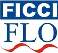

| Delegate Partner |
| FLO, The Women Wing of FICCI |
| 
Women are becoming part of the national resurgence towards development in all spheres. Although they are making a significant contribution, their work goes largely unnoticed. No one realizes this better than FLO. FLO established in 1983, FLO is the women Wing of FICCI, the Federation of Indian Chambers of Commerce and Industry which is the apex body of industry and chambers of commerce in India. As an all India forum for women, FLO has members comprising of entrepreneurs, professionals, executives and others, who may not be working full time or are homemakers wanting to contribute to developmental initiatives. FLO believes that the resources and strengths of women need to be channelised, to help develop their full potential. The primary objective of FLO is to promote entrepreneurship and professional excellence in women. It does this through its educational and vocational training programmes, talks, seminars, panel discussions and workshops on a vast range of subjects especially concerning women and business. FLO works closely with the Ministry of MSME or Micro credit, Small and Medium Enterprises as well as with the Hans Seidel Foundation from Germany. The training programmes are organised all over India especially in the smaller towns and semi urban areas at three levels: At the grass root level, emphasis is given on entrepreneurship development programmes for crafts-persons and others especially in the remote areas of different states of India. At the middle level, women who wish to set up their own industry are given similar entrepreneurial development training to help them in developing skills for product identification, preparation of project reports, identify sources for funding, etc. Some training programmes are related to general business while others are specific to an industry. At the senior level women who are already in business or profession are provided with skill enhancement programmes like sophisticated management techniques, international marketing, human resource development, financial accountancy, Information technology etc. Besides these, FLO receives and takes delegations abroad to promote bilateral trade, internationalism and networking among women. FLO recognizes the contribution made by women in various field and felicitates them at the appropriate platform/event. And last but not least, FLO runs Business Consultancy Cells - at present, these Cells are at Delhi, Chennai, Hyderabad and Kolkata to provide consultancy services to potential entrepreneurs. FLO is a pan India organisation with its head office in Delhi and chapters currently in Mumbai, Chennai, Kolkata, Guwhati, Coimbatore, Jaipur, Ahmedabad and Hyderabad. FICCI & FLO This translates into a vast network of organizations, government bodies and individuals who can be leveraged to contribute. |